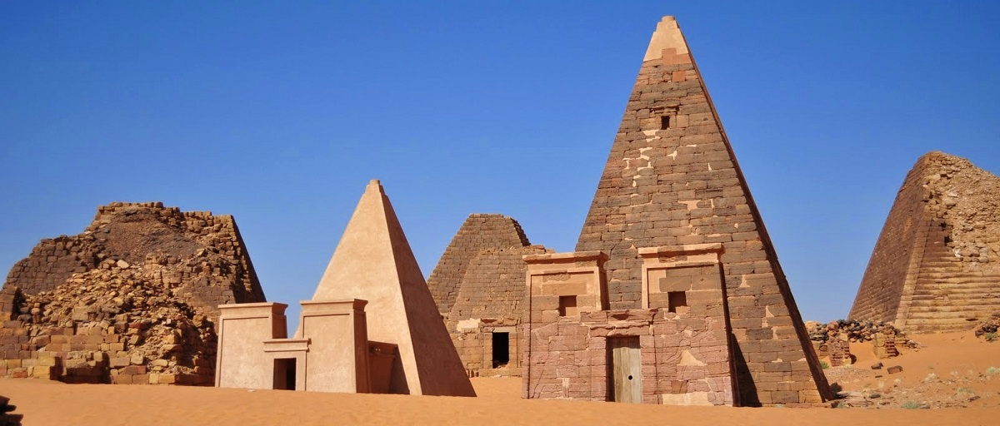
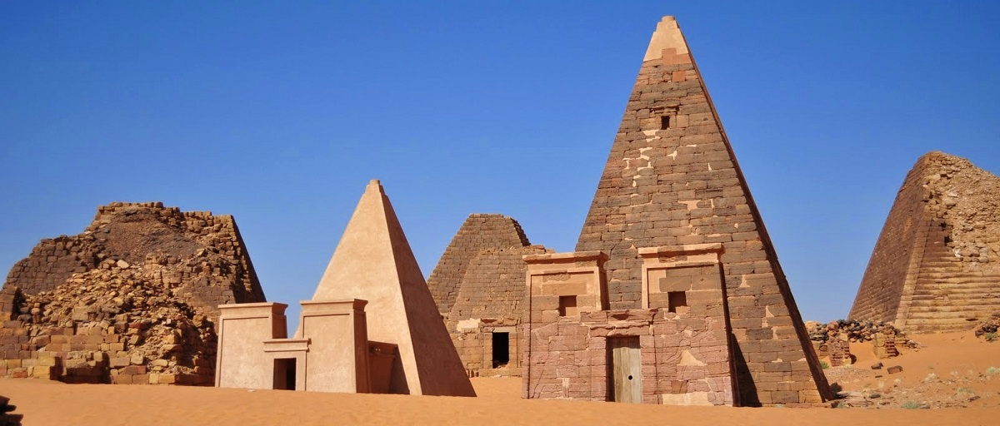

Tourism
The Pyramids of Meroë are a prominent tourist destination in Sudan,
attracting history and archaeology enthusiasts.
They were inscribed on the UNESCO World Heritage List in 2011.
Visitors can explore the pyramids both inside and outside,
enjoy photographing the surrounding desert scenery,
and learn about the history of the Kingdom of Kush through tour guides or informational plaques.
It is recommended to visit during the winter season (November to February) to avoid the intense summer heat.
The Pyramids of Meroë are a prominent tourist destination in Sudan,
attracting history and archaeology enthusiasts.
They were inscribed on the UNESCO World Heritage List in 2011.
Visitors can explore the pyramids both inside and outside,
enjoy photographing the surrounding desert scenery,
and learn about the history of the Kingdom of Kush through tour guides or informational plaques.
It is recommended to visit during the winter season (November to February) to avoid the intense summer heat.
Location
The Pyramids of Meroë are located in the Bajrawiya region, near Shendi City,
north of the capital, Khartoum, approximately 200 kilometers away.
The pyramids stretch across the eastern desert of the Nile River,
offering a landscape rich in desert surroundings.
The Pyramids of Meroë are located in the Bajrawiya region, near Shendi City,
north of the capital, Khartoum, approximately 200 kilometers away.
The pyramids stretch across the eastern desert of the Nile River,
offering a landscape rich in desert surroundings.
Historical Significance
The Pyramids of Meroë date back to the Kingdom of Meroë,
which flourished between 300 BCE and 350 CE as one of the most prominent Nubian civilizations.
Meroë served as the capital of the Kingdom of Kush for an extended period,
renowned for its cultural, industrial, and religious advancements.
Sudanese pyramids are smaller than their Egyptian counterparts but are distinguished by their unique design and sharp angles.
They served as tombs for Kushite kings and queens,
with walls adorned with carvings and paintings reflecting the religious and social life of the time.
The Pyramids of Meroë date back to the Kingdom of Meroë,
which flourished between 300 BCE and 350 CE as one of the most prominent Nubian civilizations.
Meroë served as the capital of the Kingdom of Kush for an extended period,
renowned for its cultural, industrial, and religious advancements.
Sudanese pyramids are smaller than their Egyptian counterparts but are distinguished by their unique design and sharp angles.
They served as tombs for Kushite kings and queens,
with walls adorned with carvings and paintings reflecting the religious and social life of the time.
Visitor Tips
Wear comfortable clothing and suitable footwear for walking on sand.
Bring drinking water and a camera to capture the unique scenes.
Hire a tour guide for a deeper understanding of the pyramids' history.
Plan your visit during the winter season to avoid high temperatures.
Wear comfortable clothing and suitable footwear for walking on sand.
Bring drinking water and a camera to capture the unique scenes.
Hire a tour guide for a deeper understanding of the pyramids' history.
Plan your visit during the winter season to avoid high temperatures.
معرض الصور

 
